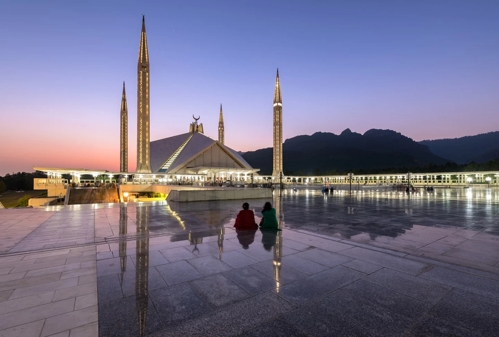
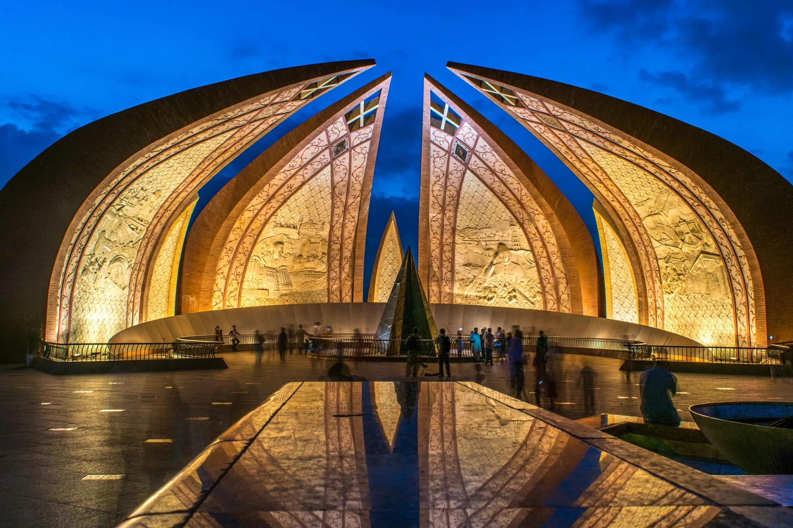
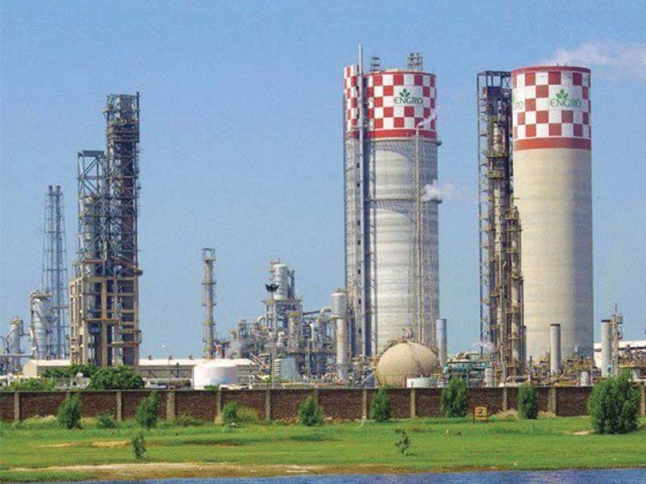
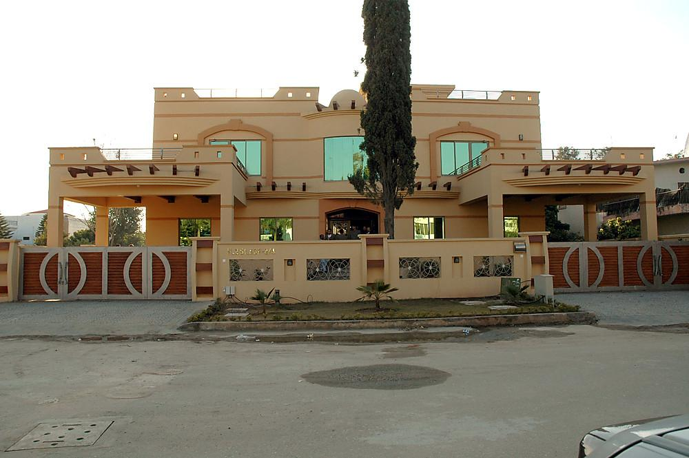
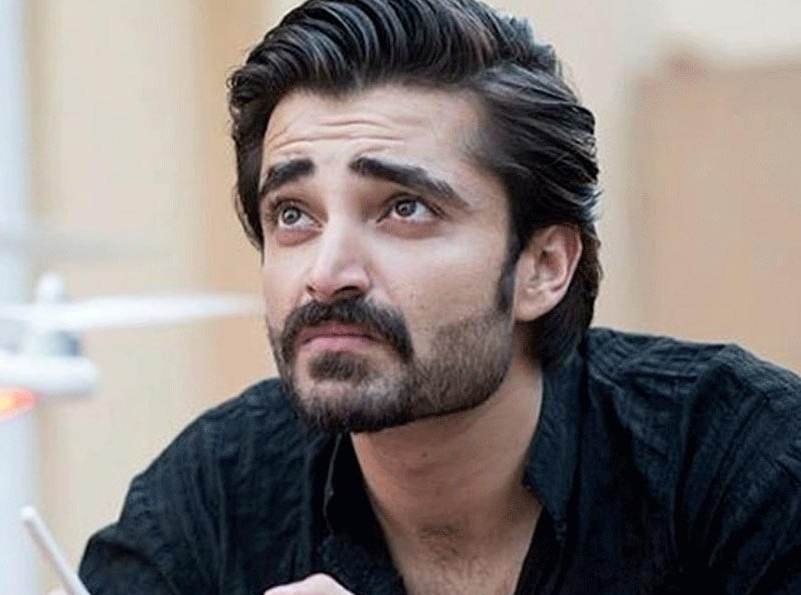
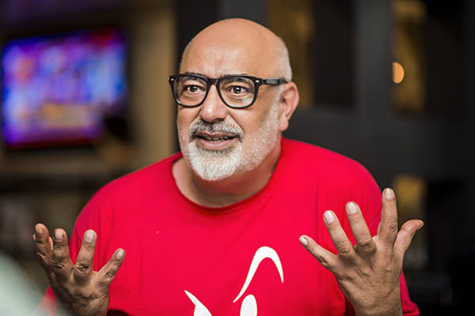

islamabad
Islamabad is the capital city of Pakistan, and is federally administered as part of the Islamabad Capital Territory. Islamabad is the ninth largest city in Pakistan, while the larger Islamabad–Rawalpindi metropolitan area is the country's fourth largest with a population of about 3.1 million
touris location
Shah Faisal Mosque
The Shah Faisal Mosque holds a special place in the Muslim community of Pakistan due to its ties with Saudi Arabia (the mosque was named after one of the kingdom’s monarchs). It can accommodate over 100,000 worshipers in its main hall and courtyard. Besides its religious significance, the mosque is famed for its architecture, which is a departure from traditional domes and arches. The building mimics a desert tent, and is situated between four pencil-like minarets. A guided tour of the mosque is usually an important part of the itinerary of tourists visiting Islamabad.
pakistan monument
For history and nature buffs, the city is home to a number of museums. For those seeking a pictorial history of Islamabad, the photo museum at Saidpur Village that chronicles the city through the ages. The Lok Virsa Museum depicts the culture of Pakistan; the Golra Sharif Heritage Museum tells the story of the country’s railways; the Pakistan Natural History Museum offers insight into the local flora and fauna; and the Pakistan Monument Museum houses wax figures that narrate the Pakistan Movement..
Eating out
Islamabad offers most of the major cuisines in demand in the region. Continental, Chinese, American, English, Italian and Pakistani food are widely available. From high-end restaurants to tiny food stalls, the city has something for everyone and won’t let any visitors go hungry for lack of variety. The Monal Restaurant deserves a special mention, both due to its extensive menu and ideal location. A 30-minute drive from central Islamabad up to Pir Sohawa in the Margalla Hills leads to Monal, where one can enjoy stunning views of the city while having a fulfilling meal.

industries
Engro Corporation
Engro Corporation, earlier known as Esso Fertilizers, is a Pakistani multinational conglomerate company with subsidiaries involved in production of fertilizers, foods, chemicals, energy and petrochemicals. Its major subsidiaries, Engro Fertilizers, which is one of the largest fertilizer manufacturers of the world.
Pakistan Accumulators
Pakistan Accumulators (Pvt.) Ltd. (PAL) is an ISO 9001 & ISO 14001 certified company that focuses in various battery types under brands "VOLTA" & "OSAKA" for more than 20 years. At first, batteries were manufactured under Technical support of Chloride Industrial Batteries.
islamabad history
Islamabad (/ɪsˈlɑːməˌbɑːd/; Urdu: اسلام آباد, romanized: Islāmābād) is the capital city of Pakistan, and is federally administered as part of the Islamabad Capital Territory. Islamabad is the ninth largest city in Pakistan, while the larger Islamabad–Rawalpindi metropolitan area is the country's fourth largest with a population of about 3.1 million.[7] Built as a planned city in the 1960s to replace Karachi as Pakistan's capital, Islamabad is noted for its high standards of living,[9] safety,[10] and abundant greenery.[11] The city's master plan, designed by Greek architect Constantinos Apostolou Doxiadis, divides the city into eight zones, including administrative, diplomatic enclave, residential areas, educational sectors, industrial sectors, commercial areas, and rural and green areas which are administered by the Islamabad Metropolitan Corporation, supported by the Capital Development Authority. The city is known for the presence of several parks and forests, including the Margalla Hills National Park and the Shakarparian.[12] The city is home to several landmarks, with the most notable one being the Faisal Mosque − the largest mosque in South Asia[13] and the fifth largest in the world. Other landmarks include the Pakistan National Monument and Democracy Square.[14][15][16] Islamabad is a Gamma + city as rated by the Globalization and World Cities Research Network.[17] The city has the highest cost of living in Pakistan, and its population is dominated by middle and upper middle class citizens.[9][18] The city is home to twenty universities, including Bahria University, Quaid-e-Azam University, PIEAS, COMSATS University and NUST.[19] The city is one of the safest in Pakistan, and has an expansive RFID-enabled surveillance system with almost 2000 CCTV cameras.[10][20]
islamabad inhabitants
Islamabad Is the capital city of Pakistan located within the federal Islamabad Capital Territory. With a population of two million, it is the 10th largest city of Pakistan, while the larger Islamabad-Rawalpindi metropolitan area is the third largest in Pakistan with a population exceeding five million. The city is the political seat of Pakistan and is administered by the Islamabad Metropolitan Corporation, supported by the Capital Development Authority (CDA).Islamabad is located in the Pothohar Plateau in the northeastern part of the country, between Rawalpindi District and the Margalla Hills National Park to the north. The region has historically been a part of the crossroads of Punjab and Khyber Pakhtunkhwa with the Margalla Pass acting as the gateway between the two regions.
some famous inhabitants of islamabad
Hamza Ali Abbasi
actor, director and producer.
Kashif Abbasi
Kashif Abbasi

Tariq Amin
hairdresser and stylisti
ISLAMABAD ART FESTIVAL
Islamabad Art Festival a Project of Islamabad Art Festival (SMC – Private) Limited is built upon the foundation of cultural diversity that is so deeply embedded in the land that is now Pakistan, and in the people that are now Pakistani. Art has the unique capability of enabling people to engage intimately with their natural and cultural heritage in a creative and critical manner. The spirit of creativity and innovation brings people together and strengthens society as a whole.
why islamabad is special?
Built as a planned city in the 1960s to replace Karachi as Pakistan's capital, Islamabad is noted for its high standards of living, safety, and abundant greenery.